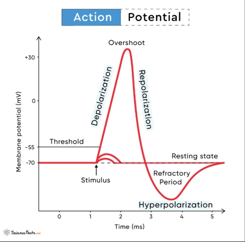

Impulse Transmission Along a Neuron
Learning Objectives
By the end of this lesson, you should be able to:
- Define resting potential, action potential and nerve impulse
- Describe the process of impulse transmission along a neuron
- State the factors that affect the speed of nerve impulse transmission
Resting Potential
- Resting potential is an electrical potential difference across the membrane of a neuron when it is not transmitting a nerve impulse (neuron at rest). The inside of the cell is more negatively charged relative to the outside, and is typically around -70 millivolts.
- During resting potential, the neuron maintains a stable internal environment through the action of the sodium-potassium pump, which actively transports Na+ ions out of the cell and K+ ions into the cell, maintaining a higher concentration of Na+ outside and K+ inside the cell.
- Resting potential is essential for the neuron to be ready to generate an action potential when stimulated.
Action Potential
An action potential is a rapid and temporary change in the membrane potential of a neuron when it is stimulated. Once an action potential is generated, it is propagated (transmitted) along the neuron as a nerve impulse.
A nerve impulse is therefore a wave of action potentials that move along a neuron.
How is nerve impulse transmitted along a neuron?
- When a neuron is stimulated, voltage-gated sodium channels open, allowing Na+ ions to rush into the cell by diffusion. The membrane becomes depolarized leading to a reversal of the membrane potential (the inside becomes positively charged, while the outside becomes negatively charged).
- If the depolarization is strong enough to reach a certain threshold (usually around -55 mV), an action potential is generated.
- Generation of an action potential at a point on the axon sets up a local current that stimulates the immediate adjacent resting region ahead to become depolarized, and subsequently generating an action potential. This process is repeated along the neuron, propagating the action potential or nerve impulse.
- At the peak of an action potential, voltage-gated sodium channels close, while voltage-gated potassium channels open, allowing K+ ions to exit the cell by diffusion. This repolarizes the membrane, restoring the resting potential.
- Sodium potassium pump continues to function to maintain the resting potential.
- In myelinated neurons, local current extends from one node of Ranvier to another, resulting in the action potential jumping from one node of Ranvier to another, a process known as saltatory conduction. This leads to faster transmission of nerve impulses than in non-myelinated neurons.
NB: After an action potential, the neuron enters a refractory period during which it cannot generate another action potential. Refractory period prevents overstimulation of a neuron, allowing it to reset before being stimulated again.

Factors affecting the speed of transmission of nerve impulse
- Axon diameter: The larger the diameter of the axon, the faster the transmission of nerve impulse. Larger diameter axons have less resistance to the flow of ions, allowing for faster transmission of nerve impulses.
- Myelin sheath: Myelinated neurons conduct impulses faster than non-myelinated neurons. This is due to saltatory conduction, where the action potential jumps from one node of Ranvier to another.
- Temperature: Higher temperatures can increase the speed of nerve impulse transmission, while lower temperatures can slow it down.
Summary
When a neuron is not stimulated, it maintains a resting potential of around -70mV. When stimulated by a strong stimulus, a rapid and temporary change in the membrane potential of a neuron known as an action potential is generated and propagated along the axon.
In myelinated neurons, the action potential jumps from one node of Ranvier to another (saltatory conduction), resulting in faster transmission of nerve impulses. The speed of nerve impulse transmission can be affected by axon diameter, myelination, and temperature.
Revision questions
1. Define the following terms: resting potential, action potential and nerve impulse.
2. Describe the process of impulse transmission along a neuron.
3. What is the significance of the refractory period in nerve impulse transmission?
4. What factors influence the speed of nerve impulse transmission along a neuron?